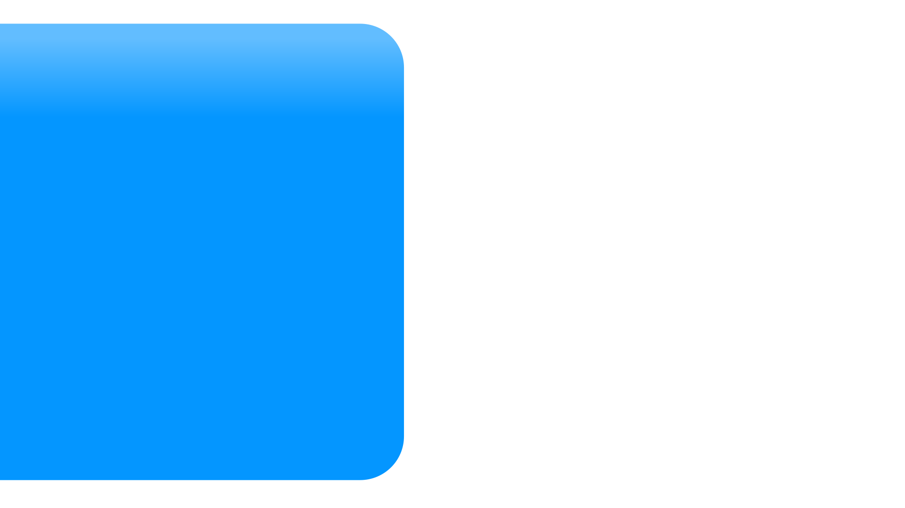
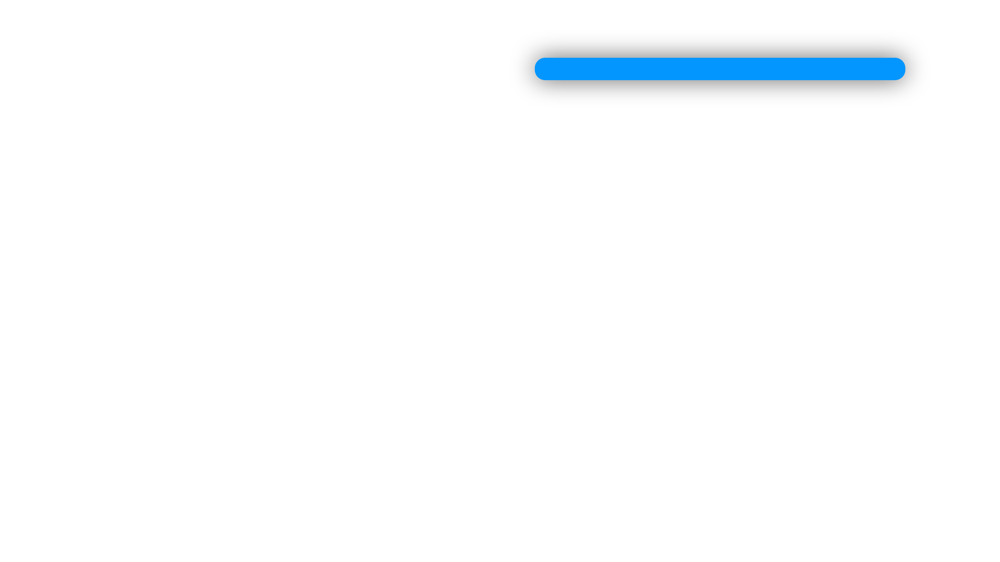
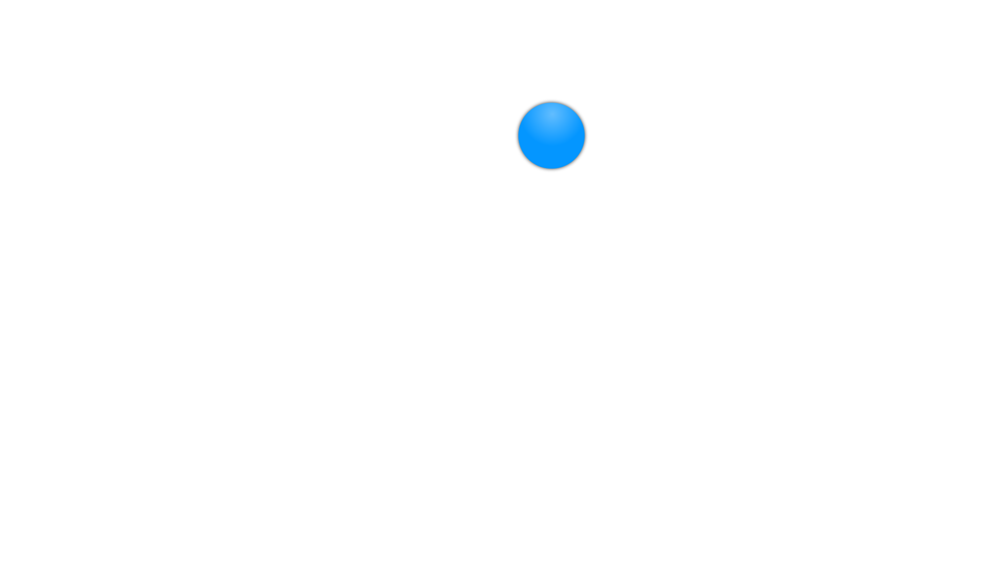

<!DOCTYPE html>
<html lang="en">
<head>
  <meta charset="UTF-8">
  <title>Timeline — 5 Tiles v2</title>
  <link href="https://fonts.googleapis.com/css2?family=Inter:wght@400;500;700;800;900&display=swap" rel="stylesheet">
  <link href="https://api.fontshare.com/v2/css?f[]=satoshi@400,500,700,900&display=swap" rel="stylesheet">
  <style>
    * { margin: 0; padding: 0; box-sizing: border-box; }
    html, body, #root {
      width: 100%; height: 100%; overflow: hidden;
      background: #0a0a0a;
      font-family: 'Satoshi', -apple-system, BlinkMacSystemFont, 'Helvetica Neue', Arial, sans-serif;
    }
  </style>
</head>
<body>
  <div id="root"></div>

  <script crossorigin src="https://unpkg.com/react@18/umd/react.development.js"></script>
  <script crossorigin src="https://unpkg.com/react-dom@18/umd/react-dom.development.js"></script>
  <script src="https://unpkg.com/@babel/standalone/babel.min.js"></script>

  <script type="text/babel">
    // ─── Anchor icon — video-lecture.svg from /Video_Templates/Icon Library ───
    // Pulled verbatim; both default Oxford Blue (#052438) and the existing
    // Dodger Blue (#0496FF) accent are forced to white per spec
    // ("white line-art Icon").
    const ANCHOR_ICON_SVG = `<svg xmlns="http://www.w3.org/2000/svg" viewBox="0 0 512 512" width="100%" height="100%" fill="#FFFFFF">
<g>
  <g><path style="fill:#FFFFFF;" d="M440.004,82.996c-6.075,0-11-4.925-11-11V11c0-6.075,4.925-11,11-11s11,4.925,11,11v60.996C451.004,78.071,446.079,82.996,440.004,82.996z"/></g>
  <g><path style="fill:#FFFFFF;" d="M440.004,390.008c-6.075,0-11-4.925-11-11v-60.995c0-6.075,4.925-11,11-11s11,4.925,11,11v60.995C451.004,385.083,446.079,390.008,440.004,390.008z"/></g>
  <g><path style="fill:#FFFFFF;" d="M71.996,82.996c-6.075,0-11-4.925-11-11V11c0-6.075,4.925-11,11-11c6.075,0,11,4.925,11,11v60.996C82.996,78.071,78.071,82.996,71.996,82.996z"/></g>
  <g><path style="fill:#FFFFFF;" d="M71.996,390.008c-6.075,0-11-4.925-11-11v-60.995c0-6.075,4.925-11,11-11c6.075,0,11,4.925,11,11v60.995C82.996,385.083,78.071,390.008,71.996,390.008z"/></g>
  <g><path style="fill:#FFFFFF;" d="M226.519,257.067c-5.883,0.113-11.127-5.078-11-11c0,0,0-102.127,0-102.127c0-3.93,2.097-7.561,5.5-9.526c3.403-1.965,7.597-1.965,11,0l88.444,51.063c7.268,4.081,7.29,14.966,0,19.053c0,0-88.444,51.063-88.444,51.063C230.317,256.576,228.417,257.067,226.519,257.067z M237.519,162.993v64.021l55.444-32.011L237.519,162.993z"/></g>
  <g><path style="fill:#FFFFFF;" d="M256,451.004c-6.075,0-11-4.925-11-11v-60.996c0-6.075,4.925-11,11-11s11,4.925,11,11v60.996C267,446.079,262.075,451.004,256,451.004z"/></g>
  <path d="M501,82.996c6.075,0,11-4.925,11-11V11c0-6.075-4.925-11-11-11H11C4.925,0,0,4.925,0,11v60.996c0,6.075,4.925,11,11,11h19.498v224.017H11c-6.075,0-11,4.925-11,11v60.995c0,6.075,4.925,11,11,11h490c6.075,0,11-4.925,11-11v-60.995c0-6.075-4.925-11-11-11h-19.498V82.996H501z M22,22h468v38.996H22V22z M490,368.008H22v-38.995h468V368.008z M459.502,307.013H52.498V82.996h407.004V307.013z"/>
  <g><path d="M256,512c-22.882,0-41.498-18.616-41.498-41.498c2.279-55.053,80.725-55.037,82.996,0C297.498,493.384,278.882,512,256,512z M256,451.004c-10.751,0-19.498,8.747-19.498,19.498c1.071,25.867,37.929,25.859,38.996,0C275.498,459.751,266.751,451.004,256,451.004z"/></g>
</g>
</svg>`;

    function InlineSVG({ svg, style }) {
      return <div style={style} dangerouslySetInnerHTML={{ __html: svg }} />;
    }

    // ─── Easing + helpers ────────────────────────────────────────────────────
    const Easing = {
      linear:         t => t,
      easeOutQuad:    t => t * (2 - t),
      easeInOutQuad:  t => t < 0.5 ? 2*t*t : 1 - Math.pow(-2*t + 2, 2) / 2,
      easeOutCubic:   t => 1 - Math.pow(1 - t, 3),
      easeInOutCubic: t => t < 0.5 ? 4*t*t*t : 1 - Math.pow(-2*t + 2, 3) / 2,
      easeInOutQuint: t => t < 0.5 ? 16*t*t*t*t*t : 1 - Math.pow(-2*t + 2, 5) / 2,
      // Subtle back ease for "scale up with subtle overshoot and bounce".
      easeOutBackSubtle: t => {
        const c1 = 1.05, c3 = c1 + 1;
        return 1 + c3 * Math.pow(t - 1, 3) + c1 * Math.pow(t - 1, 2);
      },
    };
    const clamp = (v, a, b) => Math.max(a, Math.min(b, v));
    const animate = ({ from = 0, to = 1, start = 0, end = 1, ease = Easing.easeInOutCubic }) => t => {
      if (t <= start) return from;
      if (t >= end)   return to;
      return from + (to - from) * ease((t - start) / (end - start));
    };

    const TimelineContext = React.createContext({ time: 0, duration: 15 });
    const useTime = () => React.useContext(TimelineContext).time;

    // ─── Stage ───────────────────────────────────────────────────────────────
    function Stage({ width = 1920, height = 1080, duration = 15, background = '#E6ECF2', children }) {
      const [time, setTime]       = React.useState(0);
      const [playing, setPlaying] = React.useState(true);
      const [scale, setScale]     = React.useState(1);
      const stageRef = React.useRef(null);
      const rafRef   = React.useRef(null);
      const lastTs   = React.useRef(null);

      React.useEffect(() => {
        const measure = () => {
          if (!stageRef.current) return;
          const w = stageRef.current.clientWidth;
          const h = stageRef.current.clientHeight - 52;
          setScale(Math.max(0.05, Math.min(w / width, h / height)));
        };
        measure();
        const ro = new ResizeObserver(measure);
        ro.observe(stageRef.current);
        window.addEventListener('resize', measure);
        return () => { ro.disconnect(); window.removeEventListener('resize', measure); };
      }, [width, height]);

      React.useEffect(() => {
        if (!playing) { lastTs.current = null; return; }
        const step = (ts) => {
          if (lastTs.current == null) lastTs.current = ts;
          const dt = (ts - lastTs.current) / 1000;
          lastTs.current = ts;
          setTime(t => {
            let next = t + dt;
            if (next >= duration) next = next % duration;
            return next;
          });
          rafRef.current = requestAnimationFrame(step);
        };
        rafRef.current = requestAnimationFrame(step);
        return () => cancelAnimationFrame(rafRef.current);
      }, [playing, duration]);

      React.useEffect(() => {
        const onKey = (e) => {
          if (e.code === 'Space') { e.preventDefault(); setPlaying(p => !p); }
          else if (e.code === 'ArrowLeft')  setTime(t => clamp(t - (e.shiftKey ? 1 : 0.1), 0, duration));
          else if (e.code === 'ArrowRight') setTime(t => clamp(t + (e.shiftKey ? 1 : 0.1), 0, duration));
          else if (e.key === '0') setTime(0);
        };
        window.addEventListener('keydown', onKey);
        return () => window.removeEventListener('keydown', onKey);
      }, [duration]);

      return (
        <div ref={stageRef} style={{ position: 'absolute', inset: 0, display: 'flex', flexDirection: 'column', background: '#0a0a0a' }}>
          <div style={{ flex: 1, display: 'flex', alignItems: 'center', justifyContent: 'center', overflow: 'hidden', minHeight: 0 }}>
            <div style={{ width, height, background, position: 'relative', transform: `scale(${scale})`, transformOrigin: 'center', flexShrink: 0, boxShadow: '0 20px 60px rgba(0,0,0,0.4)', overflow: 'hidden' }}>
              <TimelineContext.Provider value={{ time, duration }}>
                {children}
              </TimelineContext.Provider>
            </div>
          </div>
          <PlaybackBar time={time} duration={duration} playing={playing} onPlayPause={() => setPlaying(p => !p)} onReset={() => setTime(0)} onSeek={setTime} />
        </div>
      );
    }

    function PlaybackBar({ time, duration, playing, onPlayPause, onReset, onSeek }) {
      const trackRef = React.useRef(null);
      const [drag, setDrag] = React.useState(false);
      const pct = duration > 0 ? (time / duration) * 100 : 0;
      const fmt = (t) => {
        const m = Math.floor(t / 60), s = Math.floor(t % 60), cs = Math.floor((t * 100) % 100);
        return `${m}:${String(s).padStart(2,'0')}.${String(cs).padStart(2,'0')}`;
      };
      const seek = (e) => {
        const r = trackRef.current.getBoundingClientRect();
        onSeek(clamp((e.clientX - r.left) / r.width, 0, 1) * duration);
      };
      React.useEffect(() => {
        if (!drag) return;
        const up = () => setDrag(false);
        const mv = (e) => seek(e);
        window.addEventListener('mouseup', up); window.addEventListener('mousemove', mv);
        return () => { window.removeEventListener('mouseup', up); window.removeEventListener('mousemove', mv); };
      }, [drag]);
      const btn = { width: 28, height: 28, display:'flex', alignItems:'center', justifyContent:'center', background:'rgba(255,255,255,0.04)', border:'1px solid rgba(255,255,255,0.1)', borderRadius:6, color:'#f6f4ef', cursor:'pointer', padding:0 };
      const mono = 'ui-monospace, SFMono-Regular, monospace';
      return (
        <div style={{ display:'flex', alignItems:'center', gap:12, padding:'8px 16px', background:'rgba(20,20,20,0.92)', borderTop:'1px solid rgba(255,255,255,0.08)', width:'100%', maxWidth:680, alignSelf:'center', borderRadius:8, color:'#f6f4ef', fontFamily:'Inter,system-ui,sans-serif', userSelect:'none', flexShrink:0 }}>
          <button onClick={onReset} title="Return to start" style={btn}>
            <svg width="14" height="14" viewBox="0 0 14 14" fill="none"><path d="M3 2v10M12 2L5 7l7 5V2z" stroke="currentColor" strokeWidth="1.5" strokeLinejoin="round" strokeLinecap="round"/></svg>
          </button>
          <button onClick={onPlayPause} title="Play/pause (space)" style={btn}>
            {playing ? (<svg width="14" height="14" viewBox="0 0 14 14" fill="none"><rect x="3" y="2" width="3" height="10" fill="currentColor"/><rect x="8" y="2" width="3" height="10" fill="currentColor"/></svg>) : (<svg width="14" height="14" viewBox="0 0 14 14" fill="none"><path d="M3 2l9 5-9 5V2z" fill="currentColor"/></svg>)}
          </button>
          <div style={{ fontFamily:mono, fontSize:12, fontVariantNumeric:'tabular-nums', width:64, textAlign:'right' }}>{fmt(time)}</div>
          <div ref={trackRef} onMouseDown={(e)=>{setDrag(true);seek(e);}} style={{ flex:1, height:22, position:'relative', cursor:'pointer', display:'flex', alignItems:'center' }}>
            <div style={{ position:'absolute', left:0, right:0, height:4, background:'rgba(255,255,255,0.12)', borderRadius:2 }}/>
            <div style={{ position:'absolute', left:0, width:`${pct}%`, height:4, background:'#0496FF', borderRadius:2 }}/>
            <div style={{ position:'absolute', left:`${pct}%`, top:'50%', width:12, height:12, marginLeft:-6, marginTop:-6, background:'#fff', borderRadius:6, boxShadow:'0 2px 4px rgba(0,0,0,0.4)' }}/>
          </div>
          <div style={{ fontFamily:mono, fontSize:12, fontVariantNumeric:'tabular-nums', width:64, color:'rgba(246,244,239,0.55)' }}>{fmt(duration)}</div>
        </div>
      );
    }

    // ─── Scene constants (measured directly from the supplied PNGs) ──────────
    const TITLE_FONT = "'Inter', -apple-system, BlinkMacSystemFont, 'Helvetica Neue', Arial, sans-serif";
    const BODY_FONT  = "'Satoshi', -apple-system, BlinkMacSystemFont, 'Helvetica Neue', Arial, sans-serif";

    // Icon_Base.png solid bbox: x=0..857, y=50..1020 → centre (428, 535).
    const ICON_PANEL_CX = 428;
    const ICON_PANEL_CY = 535;
    const ICON_SIZE     = 540;

    // Container_right.png solid bbox: x=944..1820, y=48..1022.
    // Loading bar bbox (both Base and Top): x=1027..1737, y=111..153.
    const LOAD_BAR_LEFT  = 1027;
    const LOAD_BAR_RIGHT = 1737;

    // Number_Circle_Base.png source bbox: x=996..1121, y=198..323
    // (W=126, H=126, centre 1058, 260). The asset is positioned for circle 1.
    const CIRCLE_LEFT = 996;
    const CIRCLE_TOP  = 198;
    const CIRCLE_W    = 126;
    const CIRCLE_H    = 126;

    // Final_Comp circle row centres (measured from the comp itself). The
    // source asset already lands at row 1; subsequent rows are translated.
    const ROW_CYS = [263, 420, 578, 735, 892];

    // Text starts a comfortable distance to the right of the circle.
    const TEXT_LEFT  = 1185;
    const TEXT_RIGHT = 1800;

    // ─── Animation timings (15 s total) ──────────────────────────────────────
    // Phase 1: 0.00 – 1.20s — left panel slides in, right container fades up.
    const SPLIT_IN_START = 0.00;
    const SPLIT_IN_END   = 1.20;
    const PANEL_TRAVEL   = 1100;     // left panel starts off-screen left

    // Phase 2: steps reveal sequentially; each next step starts as the
    // previous one finishes its typewriter.
    const STEP_FIRST_START = 1.50;
    const STEP_STAGGER     = 2.20;   // step-to-step interval
    const CIRCLE_SCALE_DUR = 0.55;   // subtle overshoot scale
    const TYPE_START       = 0.40;   // text begins partway through the scale
    const TYPE_DUR         = 1.30;

    // Step 1 starts at 1.50; step 5 at 1.50 + 4*2.20 = 10.30s.
    // Step 5 finishes around 10.30 + 1.70 = 12.00s, leaving 3s of held comp.

    // Loading bar progresses in 5 segments — one per step. Each segment runs
    // from the moment that step's circle starts scaling up to the moment its
    // typewriter text finishes, advancing the bar by 20% per step (0% → 20%
    // → 40% → 60% → 80% → 100%).
    const STEP_DURATION_FILL = TYPE_START + TYPE_DUR;   // bar advances during this window of each step
    function barProgress(t) {
      // Before step 1's scale-up, the bar is empty.
      if (t < STEP_FIRST_START) return 0;
      for (let i = 0; i < 5; i++) {
        const segStart = STEP_FIRST_START + i * STEP_STAGGER;
        const segEnd   = segStart + STEP_DURATION_FILL;
        if (t < segStart) {
          // In the gap between the previous step's text completion and this
          // step's start — hold at the previous milestone.
          return i * 0.2;
        }
        if (t < segEnd) {
          const local = (t - segStart) / STEP_DURATION_FILL;
          const eased = Easing.easeInOutCubic(local);
          return i * 0.2 + eased * 0.2;
        }
      }
      return 1.0;   // all five steps complete — bar fully covered.
    }

    const STEP_TEXTS = [
      'Paste Step One From Storyboard',
      'Paste Step Two From Storyboard',
      'Paste Step Three From Storyboard',
      'Paste Step Four From Storyboard',
      'Paste Step Five From Storyboard',
    ];

    // ─── Phase 1 — Left icon panel ───────────────────────────────────────────
    function IconPanel({ time }) {
      const x = animate({
        from: -PANEL_TRAVEL, to: 0,
        start: SPLIT_IN_START, end: SPLIT_IN_END,
        ease: Easing.easeInOutCubic,
      })(time);
      // Icon fades in alongside the panel slide so it doesn't pop in late.
      const iconOp = animate({
        from: 0, to: 1,
        start: SPLIT_IN_START + 0.30, end: SPLIT_IN_END + 0.10,
        ease: Easing.easeInOutCubic,
      })(time);
      return (
        <div style={{
          position: 'absolute', inset: 0,
          transform: `translateX(${x}px)`,
          pointerEvents: 'none',
        }}>
          
          <div style={{
            position: 'absolute',
            left: ICON_PANEL_CX - ICON_SIZE / 2,
            top:  ICON_PANEL_CY - ICON_SIZE / 2,
            width: ICON_SIZE, height: ICON_SIZE,
            opacity: iconOp,
          }}>
            <InlineSVG svg={ANCHOR_ICON_SVG} style={{ width: '100%', height: '100%' }} />
          </div>
        </div>
      );
    }

    // ─── Phase 1 — Right container + loading bar ─────────────────────────────
    function RightContainer({ time }) {
      // Fade up (with a soft upward translate) at the same time the left panel
      // slides in — both elements arrive together.
      const op = animate({
        from: 0, to: 1,
        start: SPLIT_IN_START, end: SPLIT_IN_END,
        ease: Easing.easeInOutCubic,
      })(time);
      const ty = animate({
        from: 30, to: 0,
        start: SPLIT_IN_START, end: SPLIT_IN_END,
        ease: Easing.easeInOutCubic,
      })(time);

      // Loading bar fill — clip the Top layer to the bar's exact source x
      // range so it's INVISIBLE at progress 0 (no leaking past the bar bbox)
      // and exactly fills the bar at progress 1.
      const fillProg   = barProgress(time);
      const rightInset = (1920 - LOAD_BAR_LEFT) - (LOAD_BAR_RIGHT - LOAD_BAR_LEFT) * fillProg;

      return (
        <div style={{
          position: 'absolute', inset: 0,
          opacity: op,
          transform: `translateY(${ty}px)`,
          pointerEvents: 'none',
        }}>
          {/* Dark navy container */}
          

          {/* Loading bar BASE — darkened with a CSS filter so the empty
              section reads as "track" against the bright Dodger Blue fill.
              (Both bar assets are otherwise nearly identical Dodger Blue —
              ~RGB(4,150,255) vs ~RGB(34,163,255).) */}
          

          {/* Loading bar TOP — clipped exactly to the bar's source x range so
              nothing shows until fillProg > 0. */}
          
        </div>
      );
    }

    // ─── Phase 2 — One numbered step (circle + number + typewriter text) ─────
    function Step({ index, time }) {
      const startT = STEP_FIRST_START + index * STEP_STAGGER;
      const t      = time - startT;

      // Source circle is positioned for row 1; rows below get a translateY.
      const offsetY = ROW_CYS[index] - ROW_CYS[0];

      // Circle scale-in with subtle overshoot.
      const scaleProg  = clamp(t / CIRCLE_SCALE_DUR, 0, 1);
      const circScale  = scaleProg > 0 ? Easing.easeOutBackSubtle(scaleProg) : 0;
      const settled    = t >= CIRCLE_SCALE_DUR;
      const drawScale  = settled ? 1 : circScale;

      // Number fades in alongside the circle (slight delay so the digit only
      // appears once the circle has some real size).
      const numberOp = animate({
        from: 0, to: 1,
        start: 0.20, end: CIRCLE_SCALE_DUR + 0.05,
        ease: Easing.easeInOutCubic,
      })(t);

      // Typewriter text — starts midway through the scale-in so the rhythm
      // feels lively, finishes about 1.7s after the step's start.
      const fullText  = STEP_TEXTS[index];
      const typeProg  = clamp((t - TYPE_START) / TYPE_DUR, 0, 1);
      const charsShow = Math.floor(fullText.length * typeProg);
      const visible   = fullText.slice(0, charsShow);

      // Source circle centre is (1058, 260). Both the asset and the overlay
      // text translate by offsetY together.
      const SOURCE_CX = CIRCLE_LEFT + CIRCLE_W / 2;
      const SOURCE_CY = CIRCLE_TOP  + CIRCLE_H / 2;

      return (
        <>
          {/* Numbered circle — full-frame asset translated to this row, scaled
              from its own centre so it pops in cleanly. */}
          <div style={{
            position: 'absolute', inset: 0,
            transform: `translateY(${offsetY}px) scale(${drawScale})`,
            transformOrigin: `${SOURCE_CX}px ${SOURCE_CY}px`,
            opacity: scaleProg > 0 ? 1 : 0,
            pointerEvents: 'none',
          }}>
            
          </div>

          {/* Number — flex-centred container sized to the circle bbox so the
              digit lands optically centred regardless of font baseline. */}
          <div style={{
            position: 'absolute',
            left: CIRCLE_LEFT, top: CIRCLE_TOP + offsetY,
            width: CIRCLE_W, height: CIRCLE_H,
            display: 'flex', alignItems: 'center', justifyContent: 'center',
            color: '#FFFFFF',
            fontFamily: TITLE_FONT,
            fontWeight: 800,                  // Inter ExtraBold
            fontSize: 60,
            lineHeight: 1,
            opacity: numberOp,
            transform: `scale(${drawScale})`,
            transformOrigin: 'center center',
            pointerEvents: 'none',
          }}>
            {index + 1}
          </div>

          {/* Step text — typewriter, vertically centred against the circle. */}
          <div style={{
            position: 'absolute',
            left: TEXT_LEFT,
            top:  ROW_CYS[index],
            width: TEXT_RIGHT - TEXT_LEFT,
            transform: 'translateY(-50%)',
            color: '#FFFFFF',
            fontFamily: BODY_FONT,
            fontWeight: 700,                  // Satoshi bold
            fontSize: 37,
            letterSpacing: '-0.005em',
            whiteSpace: 'nowrap',
            opacity: t >= TYPE_START ? 1 : 0,
            pointerEvents: 'none',
          }}>
            {visible}
          </div>
        </>
      );
    }

    // ─── Scene ───────────────────────────────────────────────────────────────
    function Scene() {
      const t = useTime();
      return (
        <div style={{ position: 'absolute', inset: 0, background: '#E6ECF2', overflow: 'hidden' }}>
          <IconPanel time={t} />
          <RightContainer time={t} />
          {[0, 1, 2, 3, 4].map(i => <Step key={i} index={i} time={t} />)}
        </div>
      );
    }

    function App() {
      return (
        <Stage width={1920} height={1080} duration={15} background="#E6ECF2">
          <Scene />
        </Stage>
      );
    }

    ReactDOM.createRoot(document.getElementById('root')).render(<App />);
  </script>
</body>
</html>
